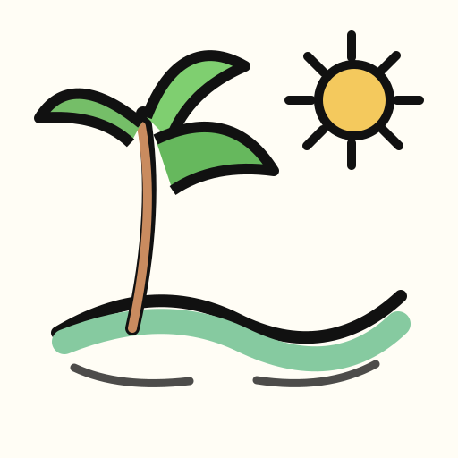
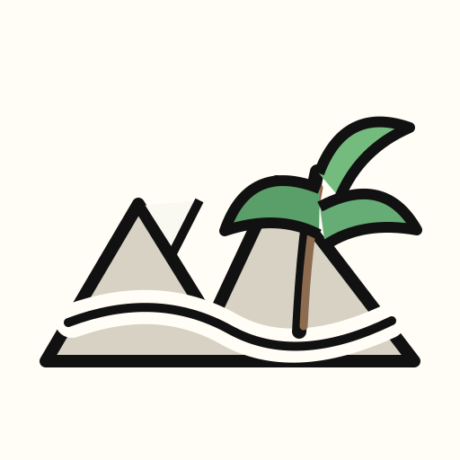
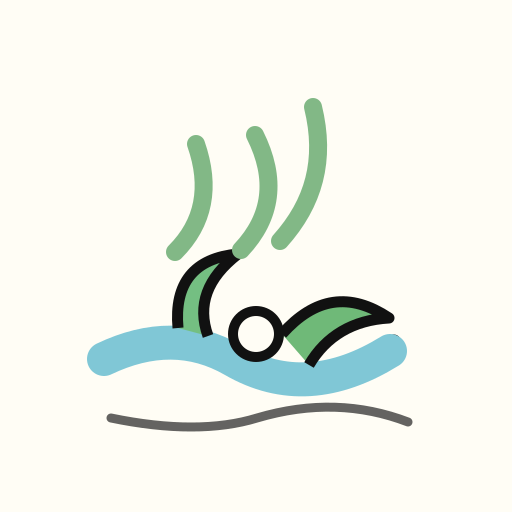

西双版纳
到西双版纳之后，时间像被水汽泡软。绿色不是背景，而是整个城市的语气；寺庙的金色、街边的风和晚上的热闹，都会让人自动把通知声调低。
- 01适合把行程排松，给散步和发呆留位置。
- 02雨林感不是景点标签，而是城市日常的一部分。
- 03如果主页需要一点生活感，这里给的是“慢下来”的证据。
humid green
slow route
off-screen reset
路线不追求精确，像桌面上随手画出的旅行索引：北京为起点，城市作为记忆节点。

西双版纳 雨林把日程表泡软。
黄山 松、石、云，像一页旧速写。
济南 泉水在城里留白。每个地方留一页短手账：照片、路线和当时最先浮上来的观察。
到西双版纳之后，时间像被水汽泡软。绿色不是背景，而是整个城市的语气；寺庙的金色、街边的风和晚上的热闹，都会让人自动把通知声调低。
还没走到，但已经在脑子里亮起来的地方。用便签留下，不做正式计划。
把绿色和风都存进相机里。
summer list看一次真正的风沙和壁画颜色。
northwest去看看器物是怎么从土里长出来的。
weekend沿着海风和旧巷子走一下午。
south line把庭院、木头和雨声放在同一页。
slow trip去看一种不像地球的安静。
long shot